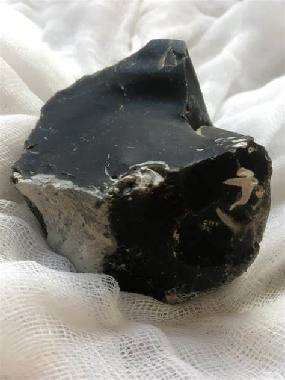
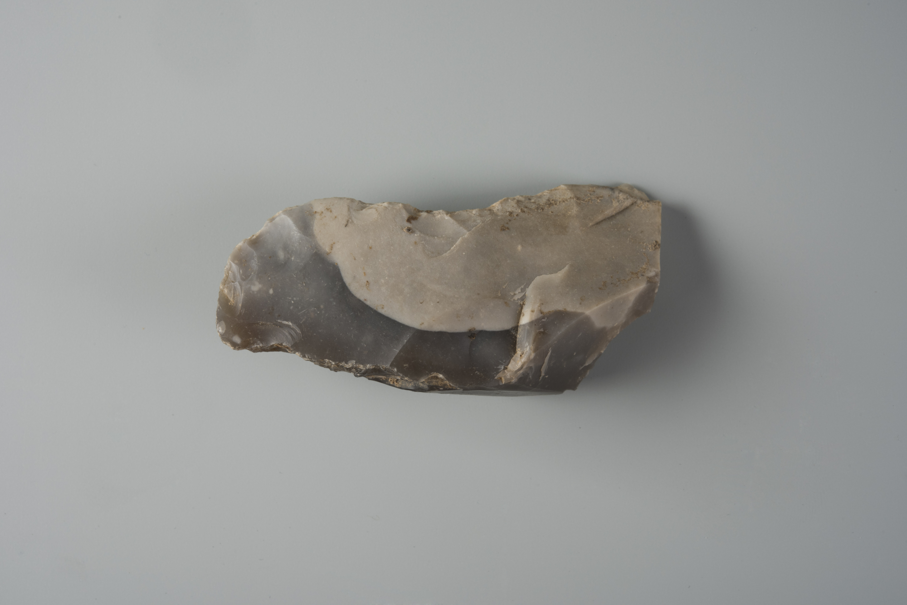
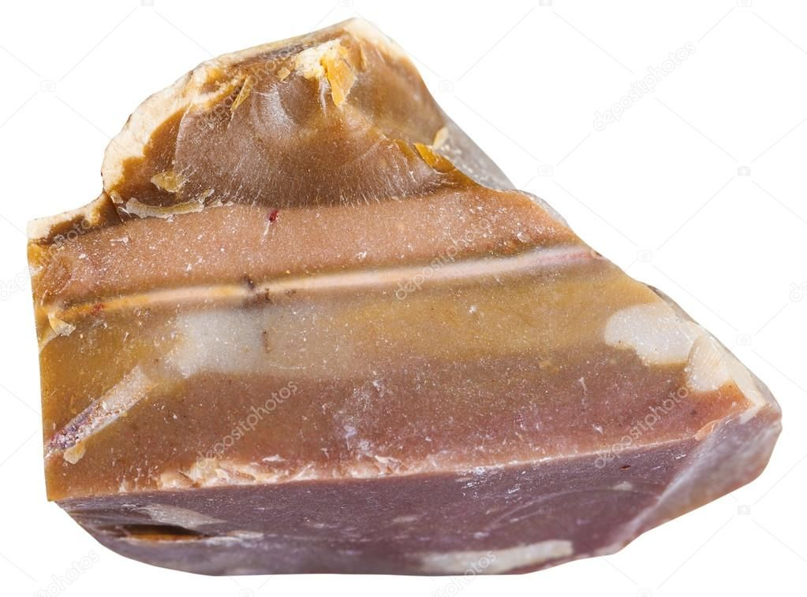
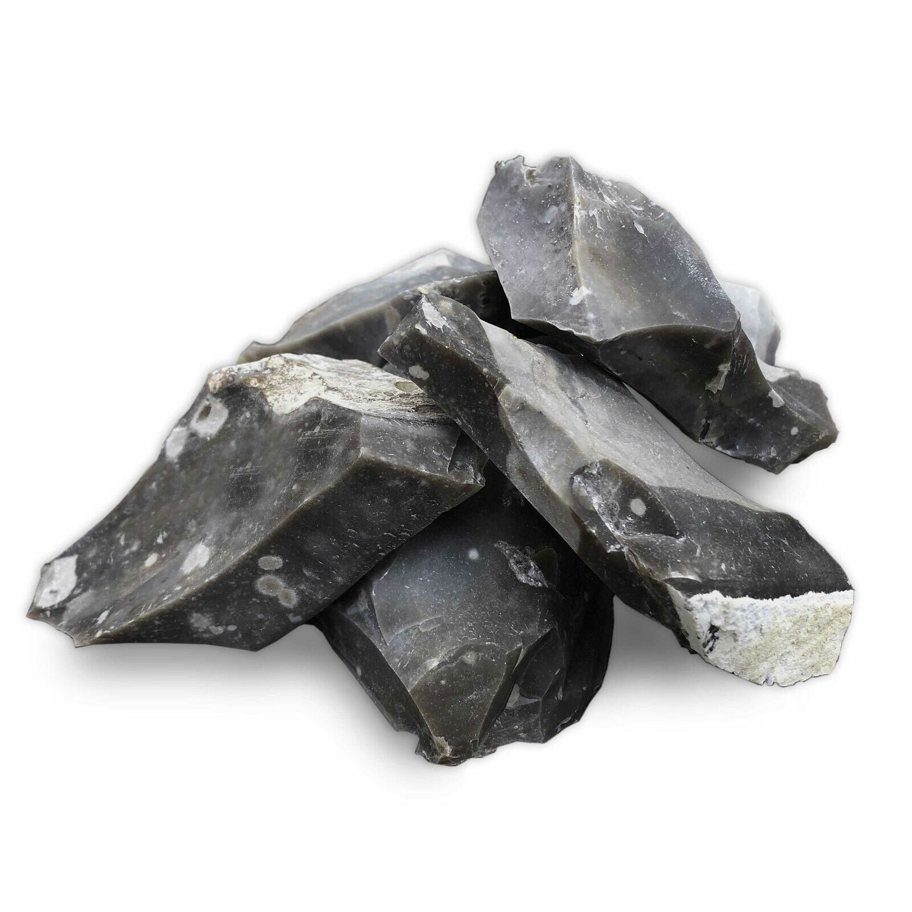
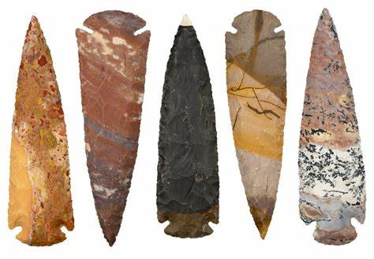

Flint: The Sharp Sedimentary Rock

Chemical Formula: Primarily SiO₂ (Silicon Dioxide)
Color: Various (Grey, Black, Brown, Red, Yellow)
Hardness: 6.5-7 on the Mohs scale
Crystal System: Cryptocrystalline (Quartz)
Localities: United Kingdom, France, United States, Egypt, Denmark
Common Uses: Tools, Weapons, Fire-Starting, Construction, Jewelry
Introduction to Flint
Flint is a hard sedimentary form of the mineral quartz (silicon dioxide) that has been historically significant for its use in making tools, weapons, and fire-starting implements. Known for its conchoidal fracture, which allows it to break into sharp-edged pieces, flint has played a crucial role in human evolution and technological advancement.
Flint often forms in nodules or layers within sedimentary rocks like limestone or chalk. Its color ranges from grey to black but it can also be found in shades of brown, red, and yellow due to impurities like iron or organic material. Flint’s durability, sharpness, and ability to produce sparks make it one of the most important rocks in human history, particularly during the Stone Age.
Formation and Types of Flint
Flint forms through a process called diagenesis, where silica from marine organisms like sponges and diatoms precipitates into nodules or layers within sedimentary rocks, typically chalk or limestone. Over time, the silica hardens into cryptocrystalline quartz, creating the tough, glassy texture characteristic of flint.
Key Types of Flint:
1. Black Flint
The most common variety, black flint is typically found in chalk or limestone deposits. It has been extensively used for tool-making and construction due to its hardness and sharp edges.
2. Grey Flint
Grey flint is often found in northern Europe and is used both as a construction material and for tool-making. Its lighter color is due to different mineral impurities compared to black flint.
3. Brown Flint
Brown flint contains higher levels of iron oxides, giving it a reddish-brown hue. It is found in regions like Egypt and is used decoratively and functionally.
4. Chert

While similar to flint, chert is more often found in limestone and can range in color. It shares many of the same properties as flint but is not always as sharp.
5. Fire Flint
Known for its ability to generate sparks when struck against steel, fire flint was historically used in fire-starting tools including flintlock firearms.
Structure and Properties of Flint
Flint is a variety of quartz and is known for its hard, glass-like structure. It is formed through the precipitation of silica, which creates an extremely fine-grained cryptocrystalline texture. Its unique fracture pattern makes it ideal for creating sharp tools and weapons.
- Hardness: Flint has a hardness of 6.5-7 on the Mohs scale, making it durable and suitable for cutting tools.
- Color: Flint is typically grey to black but can also appear in brown, red, or yellow hues due to the presence of organic material or mineral impurities.
- Fracture: Flint exhibits conchoidal fracture, meaning it breaks into smooth curved surfaces. This property allows it to be knapped into sharp, precise edges.
- Luster: Flint has a waxy to glassy luster when freshly broken, which dulls slightly with exposure to air.
Uses of Flint
Flint has been used by humans for millions of years due to its hardness, sharpness, and spark-producing abilities. Its most famous applications are in tool-making and fire-starting, though it also serves decorative and construction purposes.
1. Tools and Weapons
Flint was one of the primary materials used for tools and weapons during the Stone Age. Its ability to break into sharp edges made it ideal for cutting, scraping, and hunting.
- Arrowheads and Spear Points: Early humans crafted flint into arrowheads, spear points, and knives for hunting and defense. These tools were used for butchering animals, woodworking, and protection.
- Axes and Scrapers: Flint axes were used to cut down trees and shape wood, while scrapers made from flint were essential in preparing animal hides for clothing and shelter.
2. Fire-Starting Tools
Flint’s ability to generate sparks when struck against steel made it a crucial component in fire-starting kits, especially before the invention of matches.
- Flintlock Firearms: In the 17th and 18th centuries, flintlock firearms became the dominant military and hunting weapons. A piece of flint would strike steel to ignite gunpowder, firing the weapon.
- Fire Strikers: Fire-starting kits, often used by travelers and campers, include a steel striker and flint. When struck together, they produce sparks that ignite tinder.
3. Building Material
In areas where flint is abundant, it has been used as a building material, particularly in Europe. Flint walls and buildings are common in regions like southern England.
- Flint Churches and Walls: In the UK, flint was often used to construct churches, walls, and cottages. Its toughness and natural weather resistance made it ideal for long-lasting structures.
4. Jewelry and Decorative Use
Although less common than precious gemstones, flint has been polished and used in jewelry and decorative objects due to its glossy finish and range of colors.
- Carvings and Beads: Ancient civilizations, including the Egyptians, used flint for carving and making beads, taking advantage of its ability to be polished to a smooth surface.
Unusual Varieties of Flint
Certain types of flint exhibit unique features or colors, making them particularly valuable for specific applications or as collectibles.
- Petrified Flint (Flint Fossils): Flint nodules often contain fossils, particularly marine organisms. These fossilized inclusions can give flint a distinctive appearance and make it valuable for collectors.
- Rainbow Flint: In rare cases, flint can exhibit a range of colors in one specimen, caused by the presence of different minerals or organic impurities. This multicolored flint is prized for decorative uses.
- Egyptian Flint: The flint used in ancient Egypt was often brown due to iron content and was carved into ceremonial items and tools. This variety is sought after by archaeologists and collectors.
Sourcing Locations of Flint
Flint is found worldwide, primarily in areas with extensive sedimentary rock formations. Its most significant deposits are associated with chalk or limestone formations.
- United Kingdom: The chalky regions of southern England, particularly around Dover and Norfolk, have abundant flint deposits. Many historic buildings and tools from this region were constructed using local flint.
- France: France, especially the Haute-Normandie and Brittany regions, has large flint deposits used historically for building and tool-making.
- United States: Flint deposits are found in areas like Ohio (which even lends its name to the town Flint Ridge), Texas, and parts of the Rocky Mountains, where it was used by Native American tribes.
- Egypt: The deserts of Egypt have been an important source of flint for millennia, particularly during the time of the Pharaohs when it was used in tool-making and religious ceremonies.
- Denmark: Denmark's prehistoric peoples extensively used flint for making tools and weapons, and large flint deposits have been found in its coastal and inland chalk regions.
Exploration and Mining of Flint
Flint deposits are often found in sedimentary rock formations like chalk or limestone, where they occur as nodules or layers. Mining flint typically involves quarrying or surface collection in areas where these formations are exposed.
Exploration
Geologists identify flint deposits through field surveys, often focusing on regions with extensive chalk or limestone formations. Coastal erosion and riverbeds can also expose flint nodules, making them easier to collect.
Mining Methods
Flint is typically extracted through surface collection or shallow mining in quarries. In regions like southern England, flint is often collected from chalk pits where it occurs in nodules.
- Splitting and Shaping: Once extracted, flint is knapped, or chipped, to create sharp edges for tools or weapons. It is also polished for use in decorative objects or jewelry.
Processing
After mining, flint is often cleaned and split into smaller pieces for further shaping. Depending on its use, it may be knapped to create sharp edges for tools or polished for decorative purposes.
Metaphysical Properties of Flint
Flint has long been associated with protection, strength, and grounding in metaphysical and spiritual practices. Its use as a tool for survival has contributed to its symbolism in ancient and modern cultures.
- Protection and Strength: Flint is believed to offer protection and strength to those who carry it. In ancient cultures, it was used in amulets and talismans to ward off danger and protect the wearer.
- Grounding Energy: Due to its historical use as a survival tool, flint is considered a grounding stone, helping individuals connect with the earth and focus their energy on practical matters.
- Courage and Transformation: Flint is often associated with courage, helping individuals face challenges and make necessary transformations in their lives.
Famous Finds and Flint
Flint has been found in numerous archaeological sites, where it reveals important information about early human societies and their use of technology.
- Stonehenge (United Kingdom): Flint tools found around Stonehenge provide insight into the construction methods used by ancient peoples in the region. The sharpness of flint made it ideal for cutting and shaping the massive stones.
- Flint Ridge (Ohio, USA): This site in Ohio is one of the most famous sources of flint in North America. Native Americans mined flint here for thousands of years, using it to make tools and weapons.
- Mousterian Tools (France): Associated with Neanderthals, known as Mousterian tools have been found throughout France and date back over 50,000 years. These tools demonstrate the sophistication of early human technology.
- Egyptian Flint Implements: Flint was extensively used in ancient Egypt for making tools, ceremonial objects, and weapons. Some of the best-preserved flint tools come from tombs and excavation sites around the Nile River.
Caring for Flint
Flint, being a hard and durable material, requires minimal care compared to other stones, but it should still be handled with care in certain applications, particularly in jewelry or decorative pieces.
- Cleaning: Clean flint with mild soap and water. Avoid harsh chemicals that can erode the surface or alter its color, especially if the flint is used decoratively.
- Handling: Flint used in tools or weapons should be handled carefully to prevent the sharp edges from dulling. Jewelry made from flint should be stored separately from harder materials to avoid scratches.
- Storage: Store flint in a dry place, particularly if it contains fossil inclusions or is used in valuable artifacts, as moisture can sometimes cause deterioration.
Conclusion
Flint is one of the most historically significant rocks, shaping human civilization through its use in tools, weapons, and fire-starting implements. Its sharpness, durability, and ease of knapping made it essential for early human survival, while its beauty and color variations have made it a prized material for decorative objects and jewelry. Today, flint continues to be valued not only for its historical significance but also for its practicality and metaphysical properties.